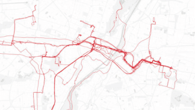

Exploring cities through data analysis and visualization
Morphocode is a design and development firm that uses data to visualize urban dynamics and provide location insights. Our team brings together expertise across architecture, urban planning, and software engineering.
.png)
We research, design, and develop
Our portfolio ranges from interactive web maps and information graphics to custom software tools for data analysis and visualization.
View ProjectsLearn with Morphocode
Morphocode Academy is an online school that covers topics in data visualization, creative coding, and urban informatics.
Start Learning.png)
From the blog
-

The power of interactive tools
The power of interactive tools Tools augment our problem-solving capacity. We rely on them to expand our minds and provide ease, accuracy, and [...]
-

The making of Morphocode Explorer
Over the last year, we’ve been working on a new web tool for interactive data exploration [...]
-

Urban performance measures
Urban performance measures help communities make informed decisions and measure results against goals. [...]
-
The power of interactive tools
The power of interactive tools Tools augment our problem-solving capacity. We rely on them to expand our minds and provide ease, accuracy, and [...]
-
The making of Morphocode Explorer
Over the last year, we’ve been working on a new web tool for interactive data exploration [...]
-
Urban performance measures
Urban performance measures help communities make informed decisions and measure results against goals. [...]